bounded-body__480dip__fr-FR__144dpi__after
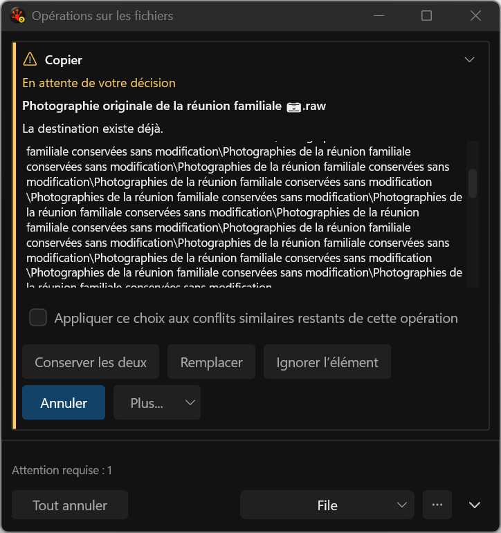
bounded-body__480dip__fr-FR__144dpi__before
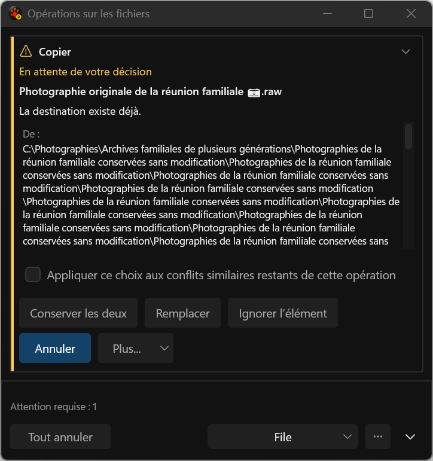
bounded-body__480dip__fr-FR__144dpi__keyboard-before
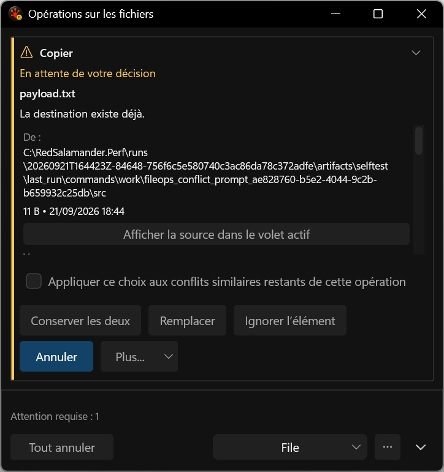
bounded-body__480dip__fr-FR__144dpi__keyboard
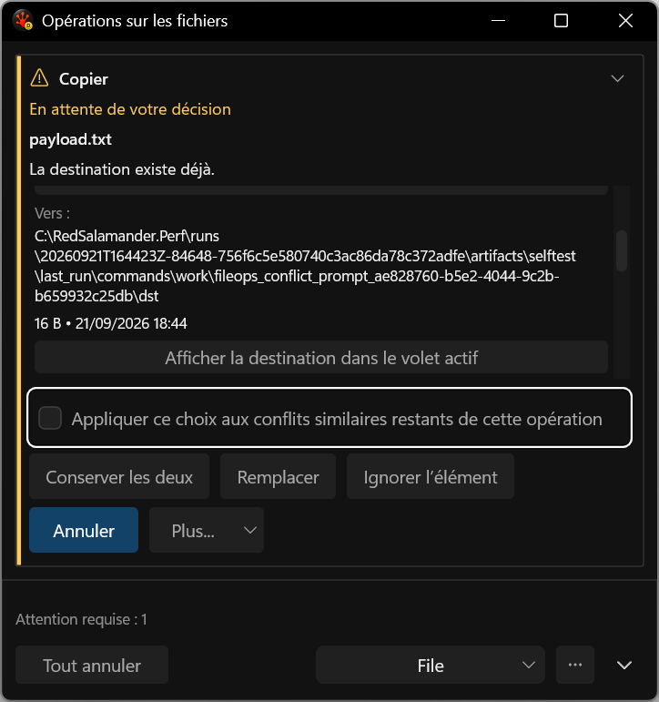
common-name__480dip__fr-FR__144dpi
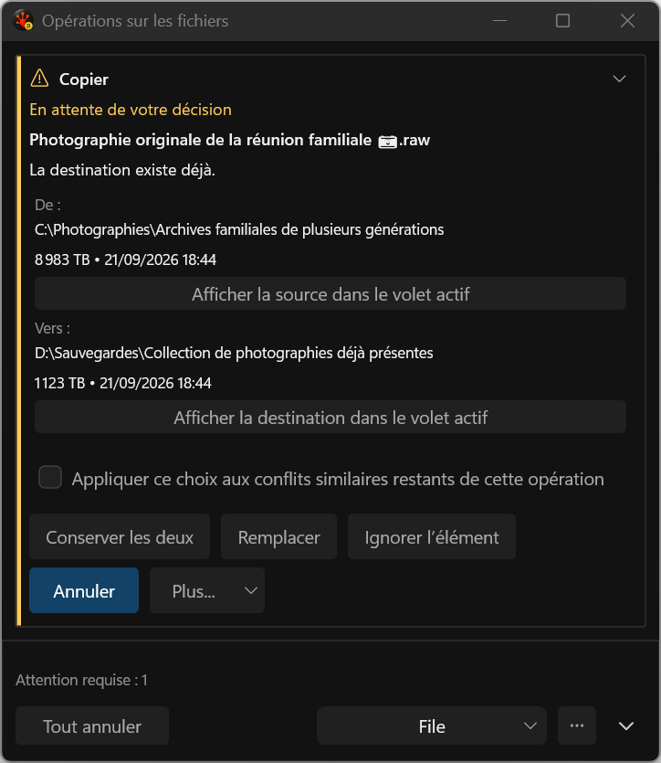
common-name__640dip__fr-FR__144dpi
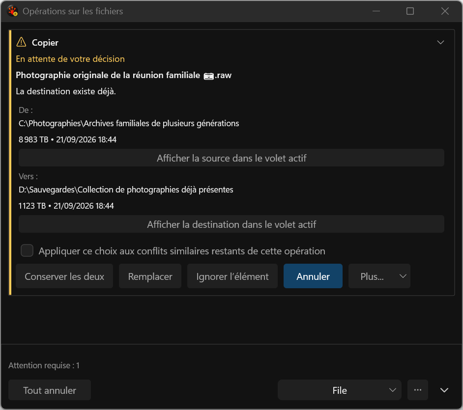
common-name__760dip__fr-FR__144dpi
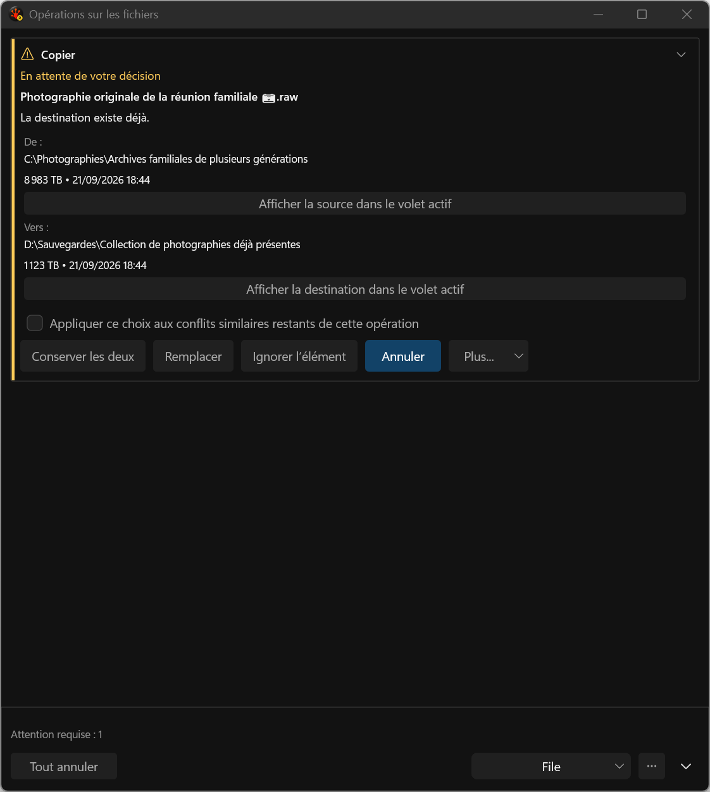
conflict-comparison__480dip__fr-FR__144dpi
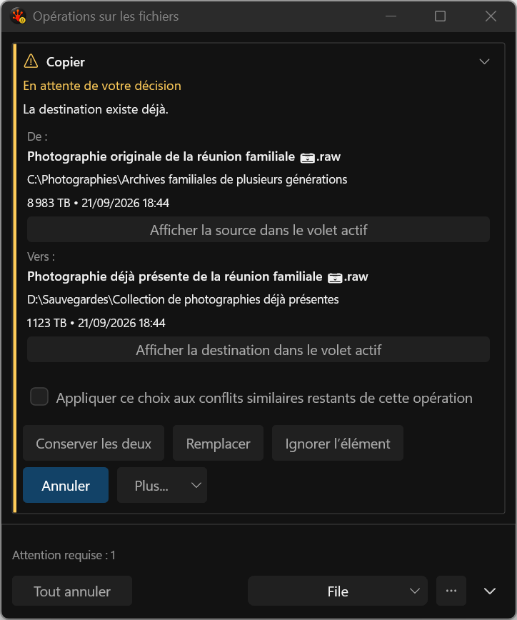
conflict-comparison__640dip__fr-FR__144dpi
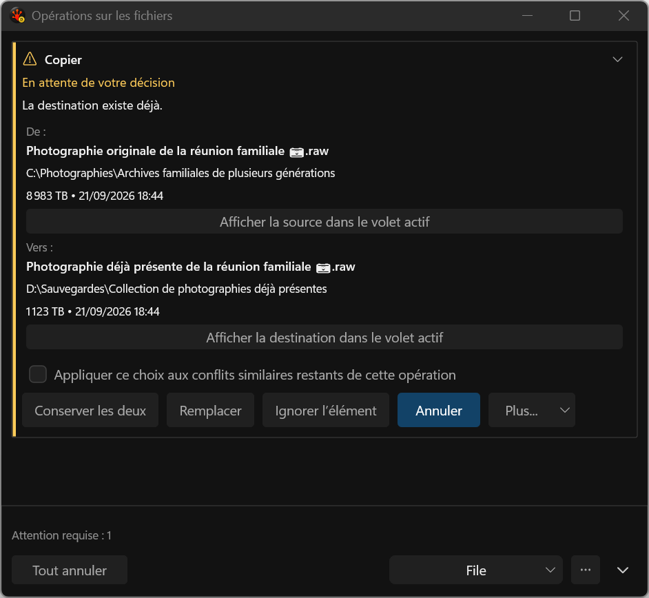
conflict-comparison__760dip__fr-FR__144dpi
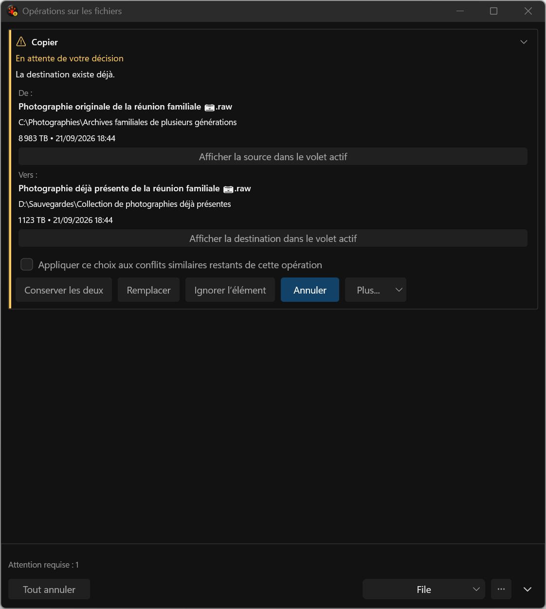
qualified-slash-provider
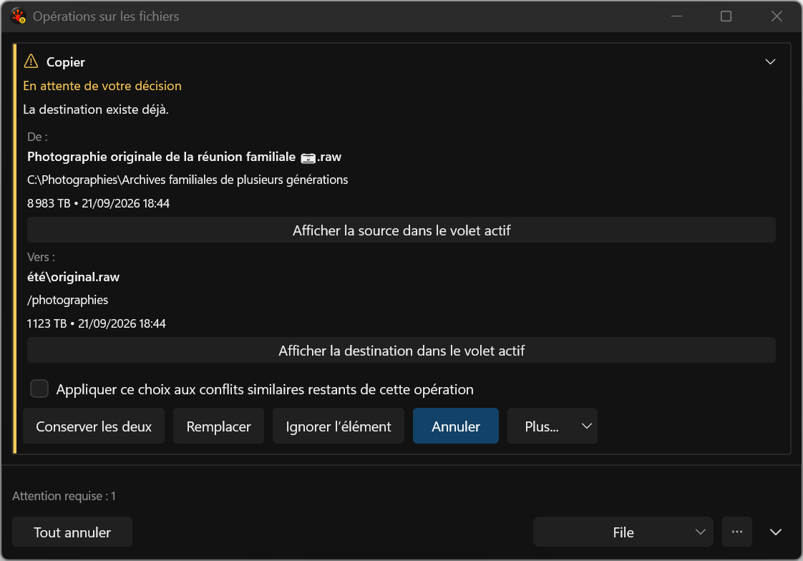
unqualified-exact-path
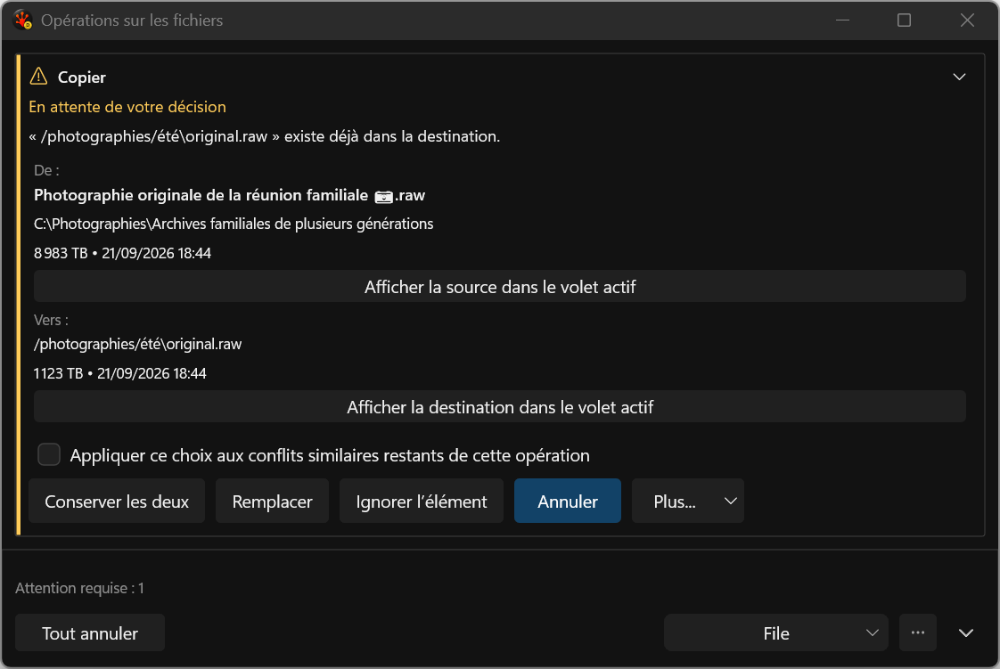